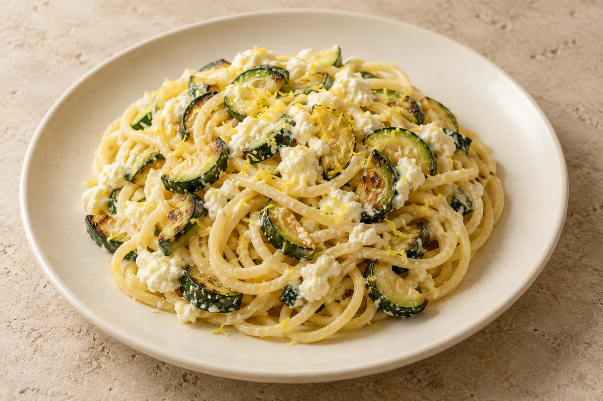
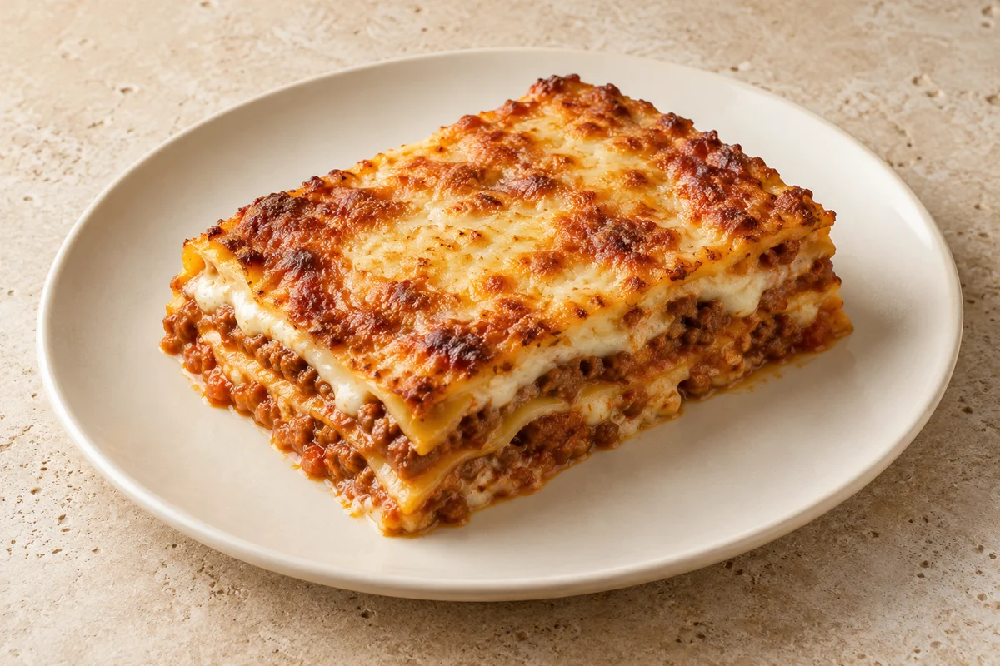
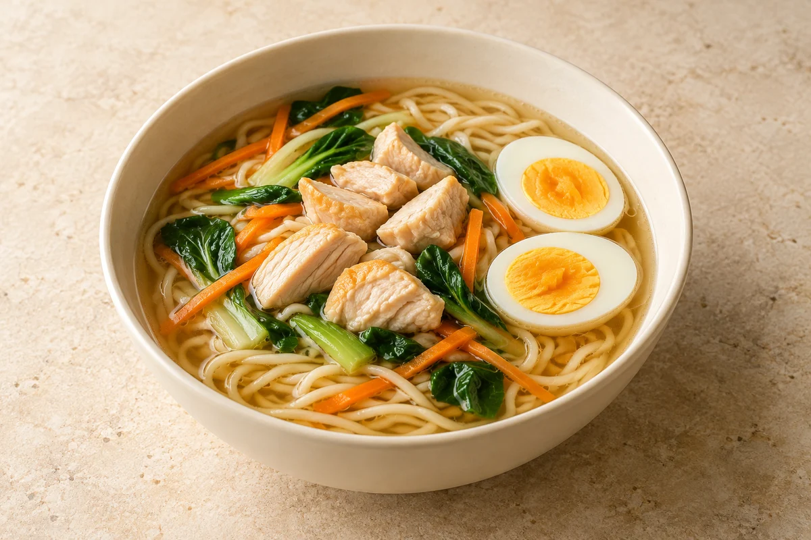
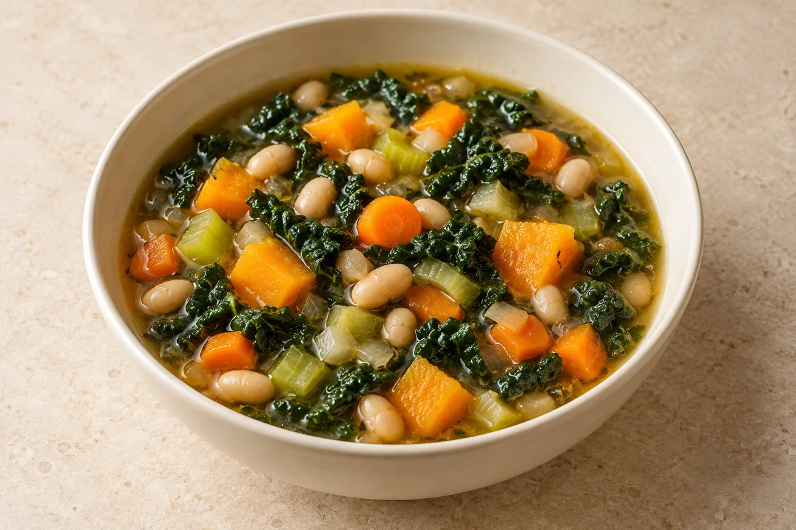
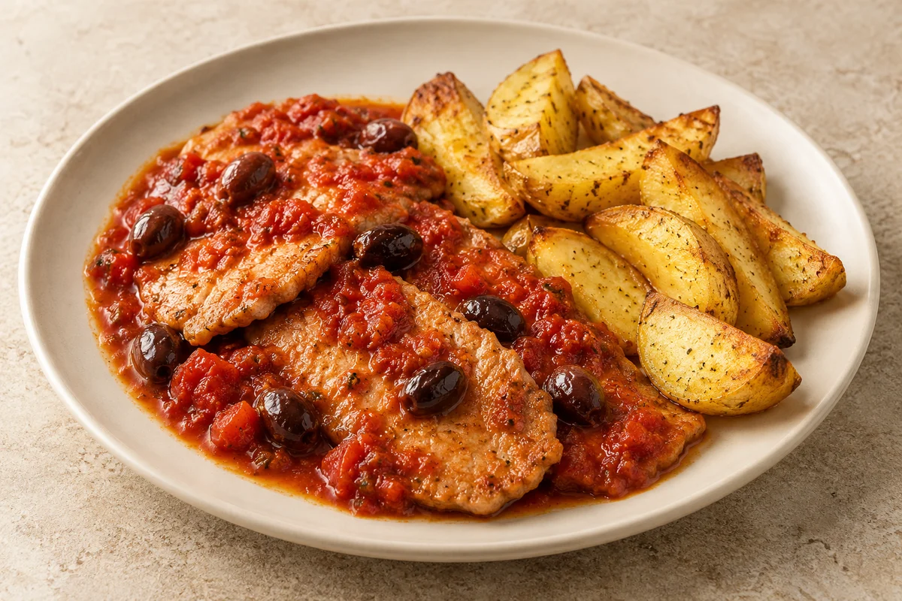
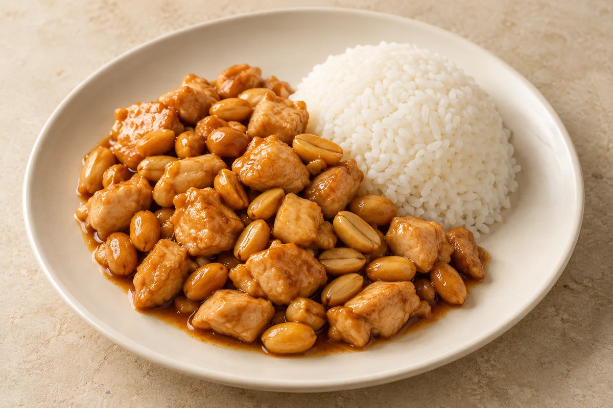

Spaghetti con zucchine e ricotta al profumo di limone
Spaghetti con zucchine e ricotta, profumati al limone.
0107
Valido solo a pranzo,
nel giorno sotto indicato

Spaghetti con zucchine e ricotta, profumati al limone.
0107

Lasagne al forno con ragù di carne.
010307

Fusilli con tonno fresco e melanzane, con poco pomodoro.
0104

Noodles in brodo di carne con pollo, uova e verdure.
0103

Zuppa di sedano, carote, cipolla, zucca, cavolo nero e fagioli.
09

Maiale alla pizzaiola con pomodoro e olive, accompagnato da patate al forno.

Bocconcini di pollo alle arachidi, accompagnati da riso bianco al vapore.
05

Arance, finocchi e avocado, con bocconcini di salmone fresco.
04
Le immagini dei piatti, pur realistiche, sono generate con intelligenza artificiale e hanno scopo illustrativo.
Attendere la conferma del Ristorante per considerare valido l’ordine.
Persone indicate nelle richieste via WhatsApp: 0
Dato indicativo: richieste avviate, non prenotazioni confermate. Azzeramento ogni giorno alle 15:00.